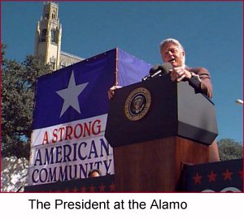
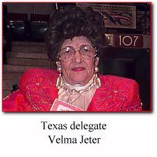

On the Horizon


As we head into the final days
of the campaign, we need your help
energizing your community to
GET OUT THE VOTE!Call the Clinton/Gore office number
below to volunteer.Texas Highlights
November 2 - The President at the Alamo
November 1 - The President's Remarks in El Paso
September 27 - The President visits Fort Worth
Houston children write “If I Were President”
in the 8th edition of America's Home PageClinton-Gore '96 Headquarters
1011 San Jacinto
Second Floor
Austin, TX 78701Phone: 512-469-6096
Fax: 512-469-0258
State Director: Andreas Gonzales
Texas Unity '96
1011 San Jacinto
Suite 101
Austin, TX 78701Phone: 512-494-VOTE
Fax: 512-494-1529
Paid for by Clinton/Gore ’96 General Election Committee, Inc.